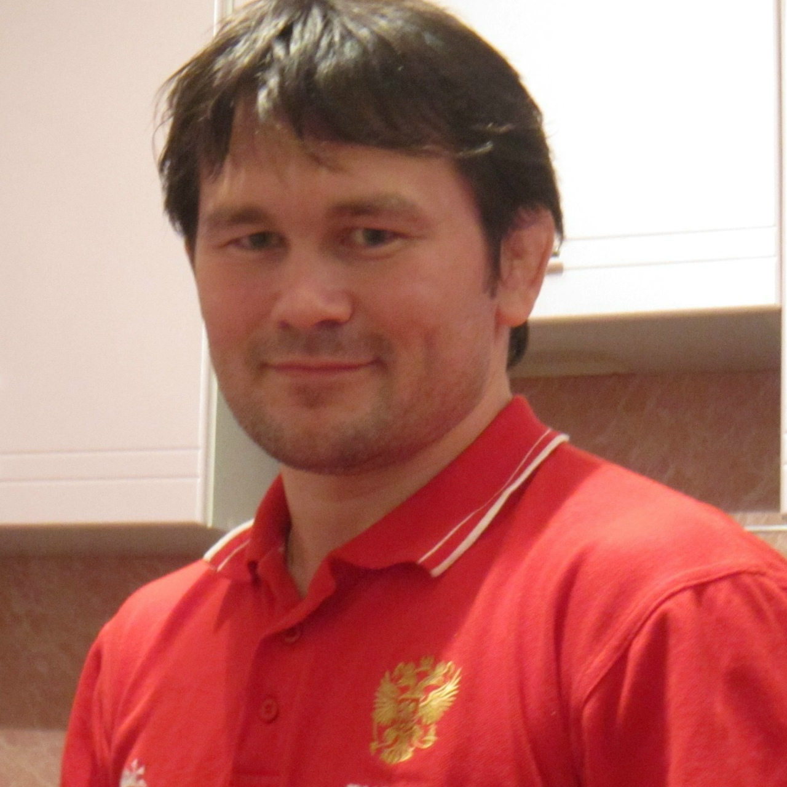

Греко-римская борьба
Юрий Дубинин — жлобинский борец греко-римского стиля, мастер спорта международного класса, участник Олимпиады-2008 в Пекине, одна из главных опор жлобинской школы борьбы. Его путь — яркий пример того, как провинциальная секция может вырастить спортсмена уровня Игр.
Юрий пришёл в секцию греко-римской борьбы во Дворце спорта Жлобина в юном возрасте — как раз в период становления местной школы (конец 1980-х — начало 1990-х). Первые шаги делал под руководством Олега Слепцова — человека, который стоял у истоков жлобинской борьбы и умел разглядеть потенциал в мальчишках из небольшого города.
Тренировочный режим был максимально жёстким: двухразовые занятия почти каждый день, кроссы, силовая работа, отработка переводов и удержаний. Именно эта база позволила Дубинину быстро прогрессировать и уже в юношеские годы стабильно попадать в составы сборных Гомельской области и республики.
Дубинин выступал в одной из средних весовых категорий и славился плотной работой в партере, умением «перетерпеть» и тактически грамотно распределить силы по схватке. Его стиль строился на надёжной защите и резких контратаках, что часто сбивало с толку более агрессивных соперников.
Ключевые вехи карьеры:
Для Жлобина участие Дубинина в Олимпиаде стало событием городского масштаба: в спортшколах и на предприятиях обсуждали каждую схватку, а мальчишки из секции старались подражать его манере борьбы.
Даже после завершения активных выступлений Юрий не ушёл из спорта. Он остаётся частью борцовской среды Жлобина: помогает тренерам, участвует в мастер-классах для ребят из СДЮШОР, делится опытом на сборах. Его олимпийский путь — важный ориентир для юных борцов: он наглядно показывает, что из Жлобина можно пробиться на мировой уровень.
Сегодня традиции жлобинской школы продолжают тренеры Владислав Ковалёв, Григорий Семченко, Максим Шевцов, Руслан Ашук, Олег Гузов. Система, в которой выросли Петренко и Дубинин, работает и сейчас: в ней по-прежнему делают ставку на дисциплину, объём базовой работы и тактическую грамотность. И именно олимпийский опыт таких спортсменов, как Юрий, помогает нынешним тренерам правильно ставить цели и готовить ребят к большим стартам.